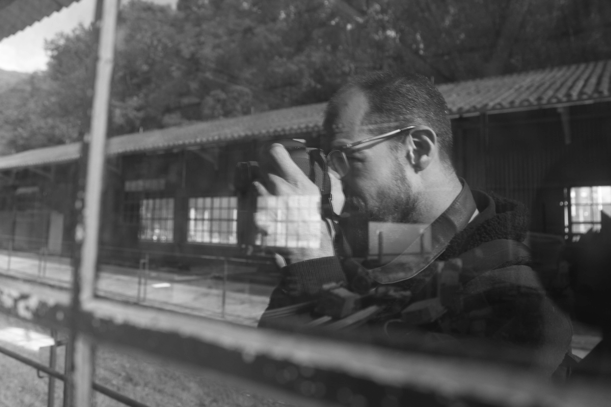

da lente
ao código
Minha jornada começou na fotografia, onde aprendi a trabalhar com composição, luz e atenção aos detalhes. Com o tempo, essa base evoluiu para o desenvolvimento, onde aplico o mesmo olhar na criação de interfaces e experiências digitais. Hoje, uno estética e funcionalidade para construir projetos que não apenas funcionam, mas comunicam.